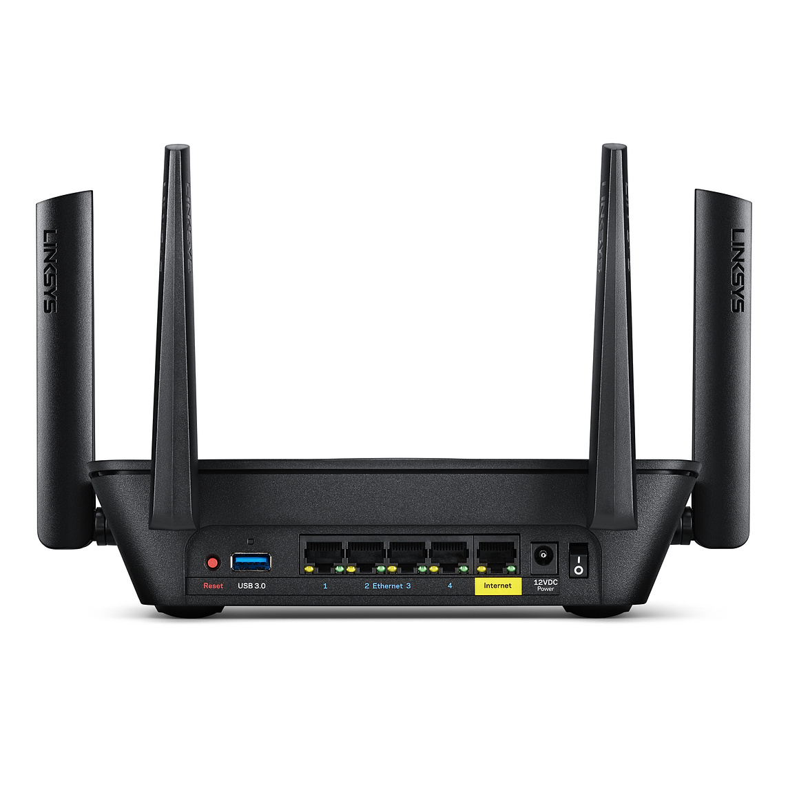

Definition: A router is a hardware device that receives, filters, and sends data packets across networks. It is connected to at least two networks, commonly two LANs or WANs. Routers are located at gateways, the place where two or more networks connect. Depending on the router's bandwidth, it can transmit a certain amount of data across the network. The bandwidth that different computing processes require will also affect what the router will permit at one time. We often confuse a router with a modem. A modem is hardware located in the home that connects a user's home network with the public Internet. It usually depends on the user's Internet service provider.
